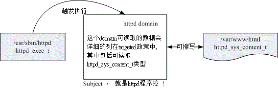

SELinux 使用所谓的委任式访问控制 (Mandatory Access Control, MAC) ，他可以针对特定的程序与特定的档案资源来进行权限的控管！
也就是说，即使你是 root ，那么在使用不同的程序时，你所能取得的权限并不一定是 root ，而得要看当时该程序的设定而定。
如此一来，我们针对控制的『主体』变成了『程序』而不是『使用者』喔！因此，这个权限的管理模式就特别适合网络服务的『程序』了！
因为，即使你的程序使用 root 的身份去启动，如果这个程序被攻击而被取得操作权，那该程序能作的事情还是有限的，
因为被 SELinux 限制住了能进行的工作了嘛！
举例来说， WWW 服务器软件的达成程序为 httpd 这支程序， 而默认情况下， httpd 仅能在 /var/www/ 这个目录底下存取档案，如果
httpd 这个程序想要到其他目录去存取数据时，除了规则设定要开放外，目标目录也得要设定成 httpd 可读取的模式 (type)
才行喔！限制非常多！ 所以，即使不小心 httpd 被 cracker 取得了控制权，他也无权浏览 /etc/shadow 等重要的配置文件喔！
 7.4.1 SELinux 的运作模式
7.4.1 SELinux 的运作模式
再次的重复说明一下，SELinux 是透过 MAC 的方式来控管程序，他控制的主体是程序，
而目标则是该程序能否读取的『档案资源』！所以先来说明一下这些咚咚的相关性啦！
- 主体 (Subject)：
SELinux 主要想要管理的就是程序，因此你可以将『主体』跟本章谈到的 process 划上等号；
- 目标 (Object)：
主体程序能否存取的『目标资源』一般就是文件系统。因此这个目标项目可以等文件系统划上等号；
- 政策 (Policy)：
由于程序与档案数量庞大，因此 SELinux 会依据某些服务来制订基本的存取安全性政策。这些政策内还会有详细的规则 (rule)
来指定不同的服务开放某些资源的存取与否。在目前的 CentOS 6.x 里面仅有提供两个主要的政策如下，一般来说，使用预设的
target 政策即可。
- targeted：针对网络服务限制较多，针对本机限制较少，是预设的政策；
- mls：完整的 SELinux 限制，限制方面较为严格。
- 安全性本文 (security context)：
我们刚刚谈到了主体、目标与政策面，但是主体能不能存取目标除了要符合政策指定之外，主体与目标的安全性本文必须一致才能够顺利存取。
这个安全性本文 (security context) 有点类似文件系统的 rwx 啦！安全性本文的内容与设定是非常重要的！
如果设定错误，你的某些服务(主体程序)就无法存取文件系统(目标资源)，当然就会一直出现『权限不符』的错误讯息了！
图 7.4-1、SELinux 运作的各组件之相关性(本图参考小州老师的上课讲义)
上图的重点在『主体』如何取得『目标』的资源访问权限！
由上图我们可以发现，(1)主体程序必须要通过 SELinux 政策内的规则放行后，就可以与目标资源进行安全性本文的比对，
(2)若比对失败则无法存取目标，若比对成功则可以开始存取目标。问题是，最终能否存取目标还是与文件系统的 rwx
权限设定有关喔！如此一来，加入了 SELinux 之后，出现权限不符的情况时，你就得要一步一步的分析可能的问题了！
CentOS 6.x 的 target 政策已经帮我们制订好非常多的规则了，因此你只要知道如何开启/关闭某项规则的放行与否即可。
那个安全性本文比较麻烦！因为你可能需要自行配置文件案的安全性本文呢！为何需要自行设定啊？
举例来说，你不也常常进行档案的 rwx 的重新设定吗？这个安全性本文你就将他想成
SELinux 内必备的 rwx 就是了！这样比较好理解啦。
安全性本文存在于主体程序中与目标档案资源中。程序在内存内，所以安全性本文可以存入是没问题。
那档案的安全性本文是记录在哪里呢？事实上，安全性本文是放置到档案的 inode
内的，因此主体程序想要读取目标档案资源时，同样需要读取 inode ，
这 inode 内就可以比对安全性本文以及 rwx 等权限值是否正确，而给予适当的读取权限依据。
那么安全性本文到底是什么样的存在呢？我们先来看看 /root 底下的档案的安全性本文好了。
观察安全性本文可使用『 ls -Z 』去观察如下：(注意：你必须已经启动了 SELinux
才行！若尚未启动，这部份请稍微看过一遍即可。底下会介绍如何启动 SELinux 喔！)
[root@www ~]# ls -Z
-rw-------. root root system_u:object_r:admin_home_t:s0 anaconda-ks.cfg
drwxr-xr-x. root root unconfined_u:object_r:admin_home_t:s0 bin
-rw-r--r--. root root system_u:object_r:admin_home_t:s0 install.log
-rw-r--r--. root root system_u:object_r:admin_home_t:s0 install.log.syslog
# 上述特殊字体的部分，就是安全性本文的内容！
|
如上所示，安全性本文主要用冒号分为三个字段 (最后一个字段先略过不看)，这三个字段的意义为：
Identify:role:type
身份识别:角色:类型
|
- 身份识别 (Identify)：
相当于账号方面的身份识别！主要的身份识别则有底下三种常见的类型：
- root：表示 root 的账号身份，如同上面的表格显示的是 root 家目录下的数据啊！
- system_u：表示系统程序方面的识别，通常就是程序啰；
- user_u：代表的是一般使用者账号相关的身份。
- 角色 (Role)：
透过角色字段，我们可以知道这个数据是属于程序、档案资源还是代表使用者。一般的角色有：
- object_r：代表的是档案或目录等档案资源，这应该是最常见的啰；
- system_r：代表的就是程序啦！不过，一般使用者也会被指定成为 system_r 喔！
- 类型 (Type)：
在预设的 targeted 政策中， Identify 与 Role 字段基本上是不重要的！重要的在于这个类型 (type) 字段！
基本上，一个主体程序能不能读取到这个档案资源，与类型字段有关！而类型字段在档案与程序的定义不太相同，分别是：
- type：在档案资源 (Object) 上面称为类型 (Type)；
- domain：在主体程序 (Subject) 则称为领域 (domain) 了！
domain 需要与 type 搭配，则该程序才能够顺利的读取档案资源啦！
- 程序与档案 SELinux type 字段的相关性
那么这三个字段如何利用呢？首先我们来瞧瞧主体程序在这三个字段的意义为何！透过身份识别与角色字段的定义，
我们可以约略知道某个程序所代表的意义喔！基本上，这些对应资料在 targeted 政策下的对应如下：
| 身份识别 | 角色 | 该对应在 targeted 的意义 |
| root | system_r | 代表供 root 账号登入时所取得的权限 |
| system_u | system_r | 由于为系统账号，因此是非交谈式的系统运作程序 |
| user_u | system_r | 一般可登入用户的程序啰！ |
但就如上所述，其实最重要的字段是类型字段，主体与目标之间是否具有可以读写的权限，与程序的 domain 及档案的
type 有关！这两者的关系我们可以使用达成 WWW 服务器功能的 httpd 这支程序与 /var/www/html 这个网页放置的目录来说明。
首先，看看这两个咚咚的安全性本文内容先：
[root@www ~]# yum install httpd
[root@www ~]# ll -Zd /usr/sbin/httpd /var/www/html
-rwxr-xr-x. root root system_u:object_r:httpd_exec_t:s0 /usr/sbin/httpd
drwxr-xr-x. root root system_u:object_r:httpd_sys_content_t:s0 /var/www/html
# 两者的角色字段都是 object_r ，代表都是档案！而 httpd 属于 httpd_exec_t 类型，
# /var/www/html 则属于 httpd_sys_content_t 这个类型！
|
httpd 属于 httpd_exec_t 这个可以执行的类型，而 /var/www/html 则属于 httpd_sys_content_t 这个可以让
httpd 领域 (domain) 读取的类型。文字看起来不太容易了解吧！我们使用图示来说明这两者的关系！

图 7.4-2、主体程序取得的 domain 与目标档案资源的 type 相互关系
上图的意义我们可以这样看的：
- 首先，我们触发一个可执行的目标档案，那就是具有 httpd_exec_t 这个类型的 /usr/sbin/httpd
- 该档案的类型会让这个档案所造成的主体程序 (Subject) 具有 httpd 这个领域 (domain)，
我们的政策针对这个领域已经制定了许多规则，其中包括这个领域可以读取的目标资源类型；
- 由于 httpd domain 被设定为可以读取 httpd_sys_content_t 这个类型的目标档案 (Object)，
因此你的网页放置到 /var/www/html/ 目录下，就能够被 httpd 那支程序所读取了；
- 但最终能不能读到正确的资料，还得要看 rwx 是否符合 Linux 权限的规范！
上述的流程告诉我们几个重点，第一个是政策内需要制订详细的 domain/type 相关性；第二个是若档案的 type 设定错误，
那么即使权限设定为 rwx 全开的 777 ，该主体程序也无法读取目标档案资源的啦！不过如此一来，
也就可以避免用户将他的家目录设定为 777 时所造成的权限困扰。
7.4.2 SELinux 的启动、关闭与观察
并非所有的 Linux distributions 都支持 SELinux 的，所以你必须要先观察一下你的系统版本为何！
鸟哥这里介绍的 CentOS 6.x 本身就有支持 SELinux 啦！所以你不需要自行编译 SELinux 到你的 Linux 核心中！
目前 SELinux 支持三种模式，分别如下：
- enforcing：强制模式，代表 SELinux 运作中，且已经正确的开始限制 domain/type 了；
- permissive：宽容模式：代表 SELinux 运作中，不过仅会有警告讯息并不会实际限制
domain/type 的存取。这种模式可以运来作为 SELinux 的 debug 之用；
- disabled：关闭，SELinux 并没有实际运作。
那你怎么知道目前的 SELinux 模式呢？就透过 getenforce 吧！
[root@www ~]# getenforce
Enforcing <==诺！就显示出目前的模式为 Enforcing 啰！
|
另外，我们又如何知道 SELinux 的政策 (Policy) 为何呢？这时可以来观察配置文件啦：
[root@www ~]# vim /etc/selinux/config
SELINUX=enforcing <==调整 enforcing|disabled|permissive
SELINUXTYPE=targeted <==目前仅有 targeted 与 mls
|
上面是默认的政策与启动的模式！你要注意的是，如果改变了政策则需要重新启动；如果由 enforcing 或 permissive
改成 disabled ，或由 disabled 改成其他两个，那也必须要重新启动。这是因为 SELinux 是整合到核心里面去的，
你只可以在 SELinux 运作下切换成为强制 (enforcing) 或宽容 (permissive) 模式，不能够直接关闭 SELinux 的！
如果刚刚你发现 getenforce 出现 disabled 时，请到上述档案修改成为 enforcing 然后重新启动吧！
不过你要注意的是，如果从 disable 转到启动 SELinux 的模式时，
由于系统必须要针对档案写入安全性本文的信息，因此开机过程会花费不少时间在等待重新写入 SELinux 安全性本文
(有时也称为 SELinux Label) ，而且在写完之后还得要再次的重新启动一次喔！你必须要等待粉长一段时间！
等到下次开机成功后，再使用 getenforce 来观察看看有否成功的启动到 Enforcing 的模式啰！
如果你已经在 Enforcing 的模式，但是可能由于一些设定的问题导致 SELinux 让某些服务无法正常的运作，
此时你可以将 Enforcing 的模式改为宽容 (permissive) 的模式，让 SELinux 只会警告无法顺利联机的讯息，
而不是直接抵挡主体程序的读取权限。让 SELinux 模式在 enforcing 与 permissive 之间切换的方法为：
[root@www ~]# setenforce [0|1]
选项与参数：
0 ：转成 permissive 宽容模式；
1 ：转成 Enforcing 强制模式
# 范例一：将 SELinux 在 Enforcing 与 permissive 之间切换与观察
[root@www ~]# setenforce 0
[root@www ~]# getenforce
Permissive
[root@www ~]# setenforce 1
[root@www ~]# getenforce
Enforcing
|
不过请注意， setenforce 无法在 Disabled 的模式底下进行模式的切换喔！
Tips:
在某些特殊的情况底下，你从 Disabled 切换成 Enforcing 之后，竟然有一堆服务无法顺利启动，都会跟你说在 /lib/xxx
里面的数据没有权限读取，所以启动失败。这大多是由于在重新写入 SELinux type (Relable) 出错之故，使用 Permissive
就没有这个错误。那如何处理呢？最简单的方法就是在 Permissive 的状态下，使用『 restorecon -Rv / 』重新还原所有
SELinux 的类型，就能够处理这个错误！
|  |
7.4.3 SELinux type 的修改
既然 SELinux 的类型字段 (type) 这么重要，那如何修改与变更这个字段，当然就是最重要的一件事啰。
首先，我们来看看如果复制一个档案到不同的目录去，会发生什么状况吧！
# 范例：将 /etc/hosts 复制到 root 家目录，并观察相关的 SELinux 类型变化
[root@www ~]# cp /etc/hosts /root
[root@www ~]# ls -dZ /etc/hosts /root/hosts /root
-rw-r--r--. root root system_u:object_r:net_conf_t:s0 /etc/hosts
dr-xr-x---. root root system_u:object_r:admin_home_t:s0 /root
-rw-r--r--. root root unconfined_u:object_r:admin_home_t:s0 /root/hosts
# 范例：将 /root/hosts 移动到 /tmp 下，并观察相关的 SELinux 类型变化
[root@www ~]# mv /root/hosts /tmp
[root@www ~]# ls -dZ /tmp /tmp/hosts
drwxrwxrwt. root root system_u:object_r:tmp_t:s0 /tmp
-rw-r--r--. root root unconfined_u:object_r:admin_home_t:s0 /tmp/hosts
|
看到没有？当你单纯的复制时，SELinux 的 type 字段是会继承目标目录的，所以 /root/hosts 的类型就会变成
admin_home_t 这个类型了。但是如果是移动呢？那么连同 SELinux 的类型也会被移动过去，因此 /tmp/hosts 会依旧保持
admin_home_t 而不会变成 /tmp 的 tmp_t 这个类型呦！要注意！要注意！那么，如何将 /tmp/hosts 变更成为最原始的
net_conf_t 这个类型呢？那就得要使用 chcon 啰！
[root@www ~]# chcon [-R] [-t type] [-u user] [-r role] 档案
[root@www ~]# chcon [-R] --reference=范例文件 档案
选项与参数：
-R ：连同该目录下的次目录也同时修改；
-t ：后面接安全性本文的类型字段！例如 httpd_sys_content_t ；
-u ：后面接身份识别，例如 system_u；
-r ：后面街角色，例如 system_r；
--reference=范例文件：拿某个档案当范例来修改后续接的档案的类型！
# 范例：将刚刚的 /tmp/hosts 类型改为 etc_t 的类型
[root@www ~]# chcon -t net_conf_t /tmp/hosts
[root@www ~]# ll -Z /tmp/hosts
-rw-r--r--. root root unconfined_u:object_r:net_conf_t:s0 /tmp/hosts
# 范例：以 /var/spool/mail/ 为依据，将 /tmp/hosts 修改成该类型
[root@www ~]# ll -dZ /var/spool/mail
drwxrwxr-x. root mail system_u:object_r:mail_spool_t:s0 /var/spool/mail
[root@www ~]# chcon --reference=/var/spool/mail /tmp/hosts
[root@www ~]# ll -Z /tmp/hosts
-rw-r--r--. root root system_u:object_r:mail_spool_t:s0 /tmp/hosts
|
chcon 的修改方式中，我们必须要知道最终我们的 SELinux type 是啥类型后，才能够变更成功。
如果你想要作的是『复原成原有的 SELinux type』呢？那可以参考底下的指令来进行呦！
[root@www ~]# restorecon [-Rv] 档案或目录
选项与参数：
-R ：连同次目录一起修改；
-v ：将过程显示到屏幕上
# 范例：将刚刚 /tmp/hosts 移动至 /root 并以预设的安全性本文改正过来
[root@www ~]# mv /tmp/hosts /root
[root@www ~]# ll -Z /root/hosts
-rw-r--r--. root root system_u:object_r:mail_spool_t:s0 /root/hosts
[root@www ~]# restorecon -Rv /root
restorecon reset /root/hosts context system_u:object_r:mail_spool_t:s0->
system_u:object_r:admin_home_t:s0
# 上面这两行其实是同一行喔！表示将 hosts 由 mail_spool_t 改为 admin_home_t
|
透过上面这几个练习，你就会知道啦，SELinux type 恐怕会在档案的复制/移动时产生一些变化，因此需要善用
chcon, restorecon 等指令来进行修订。那你应该还是会想到一件事，那就是， restorecon 怎么会知道每个目录记载的默认
SELinux type 类型呢？这是因为系统有记录嘛！记录在 /etc/selinux/targeted/contexts，但是该目录内有很多不同的数据，
要使用文本编辑器去查阅很麻烦，此时，我们可以透过 semanage 这个指令的功能来查询与修改喔！
[root@www ~]# semanage {login|user|port|interface|fcontext|translation} -l
[root@www ~]# semanage fcontext -{a|d|m} [-frst] file_spec
选项与参数：
fcontext ：主要用在安全性本文方面的用途， -l 为查询的意思；
-a ：增加的意思，你可以增加一些目录的默认安全性本文类型设定；
-m ：修改的意思；
-d ：删除的意思。
# 范例：查询一下 /var/www/ 的预设安全性本文设定为何！
[root@www ~]# yum install policycoreutils-python
[root@www ~]# semanage fcontext -l | grep '/var/www'
SELinux fcontext 类型 Context
/var/www(/.*)? all files system_u:object_r:httpd_sys_content_t:s0
/var/www(/.*)?/logs(/.*)? all files system_u:object_r:httpd_log_t:s0
....(后面省略)....
|
从上面的说明，我们知道其实 semanage 可以处理非常多的任务，不过，在这个小节我们主要想了解的是每个目录的默认安全性本文。
如上面范例所示，我们可以查询的到每个目录的安全性本文啦！而目录的设定可以使用正规表示法去指定一个范围。那么如果我们想要增加某些自定义的目录的安全性本文呢？
举例来说，我想要制订 /srv/vbird 成为 public_content_t 的类型时，应该如何指定呢？
# 范例：利用 semanage 设定 /srv/vbird 目录的默认安全性本文为 public_content_t
[root@www ~]# mkdir /srv/vbird
[root@www ~]# ll -Zd /srv/vbird
drwxr-xr-x. root root unconfined_u:object_r:var_t:s0 /srv/vbird
# 如上所示，预设的情况应该是 var_t 这个咚咚的！
[root@www ~]# semanage fcontext -l | grep '/srv'
/srv directory system_u:object_r:var_t:s0 <==看这里
/srv/.* all files system_u:object_r:var_t:s0
....(底下省略)....
# 上面则是预设的 /srv 底下的安全性本文数据，不过，并没有指定到 /srv/vbird 啦
[root@www ~]# semanage fcontext -a -t public_content_t "/srv/vbird(/.*)?"
[root@www ~]# semanage fcontext -l | grep '/srv/vbird'
/srv/vbird(/.*)? all files system_u:object_r:public_content_t:s0
[root@www ~]# cat /etc/selinux/targeted/contexts/files/file_contexts.local
# This file is auto-generated by libsemanage
# Please use the semanage command to make changes
/srv/vbird(/.*)? system_u:object_r:public_content_t:s0
# 其实就是写入这个档案的啰！ ^_^
[root@www ~]# restorecon -Rv /srv/vbird* <==尝试恢复默认值
[root@www ~]# ll -Zd /srv/vbird
drwxr-xr-x. root root system_u:object_r:public_content_t:s0 /srv/vbird
# 有默认值，以后用 restorecon 来修改比较简单！
|
semanage 的功能很多，不过鸟哥主要用到的仅有 fcontext 这个项目的动作而已。如上所示，
你可以使用 semanage 来查询所有的目录默认值，也能够使用他来增加默认值的设定！如果您学会这些基础的工具，
那么 SELinux 对你来说，也不是什么太难的咚咚啰！
7.4.4 SELinux 政策内的规则布尔值修订
前面讲到，要通过 SELinux 的验证之后才能开始档案权限 rwx 的判断，而 SELinux 的判断主要是 (1)政策内的规则比对与
(2)程序与档案的 SELinux type 要符合才能够放行。前一个小节谈的是 SELinux 的 type ，这个小节就是要谈一下政策内的规则啰，
包括如何查询与修改相关的规则放行与否啰。
CentOS 6.x 预设使使用 targeted 政策，那么这个政策提供多少相关的规则呢？此时可以透过 seinfo 来查询喔！
[root@www ~]# yum install setools-console
[root@www ~]# seinfo [-Atrub]
选项与参数：
-A ：列出 SELinux 的状态、规则布尔值、身份识别、角色、类别等所有信息
-t ：列出 SELinux 的所有类别 (type) 种类
-r ：列出 SELinux 的所有角色 (role) 种类
-u ：列出 SELinux 的所有身份识别 (user) 种类
-b ：列出所有规则的种类 (布尔值)
# 范例一：列出 SELinux 在此政策下的统计状态
[root@www ~]# seinfo
tatistics for policy file: /etc/selinux/targeted/policy/policy.24
Policy Version & Type: v.24 (binary, mls) <==列出政策所在档与版本
Classes: 77 Permissions: 229
Sensitivities: 1 Categories: 1024
Types: 3076 Attributes: 251
Users: 9 Roles: 13
Booleans: 173 Cond. Expr.: 208
Allow: 271307 Neverallow: 0
Auditallow: 44 Dontaudit: 163738
Type_trans: 10941 Type_change: 38
Type_member: 44 Role allow: 20
Role_trans: 241 Range_trans: 2590
....(底下省略)....
# 从上面我们可以看到这个政策是 targeted ，此政策的 SELinux type 有 3076 个；
# 而针对网络服务的规则 (Booleans) 共制订了 173 条规则！
# 范例二：列出与 httpd 有关的规则 (booleans) 有哪些？
[root@www ~]# seinfo -b | grep httpd
Conditional Booleans: 173
allow_httpd_mod_auth_pam
httpd_setrlimit
httpd_enable_ftp_server
....(底下省略)....
# 你可以看到，有非常多的与 httpd 有关的规则订定呢！
|
从上面我们可以看到与 httpd 有关的布尔值，同样的，如果你想要找到有 httpd 字样的安全性本文类别时，
就可以使用『 seinfo -t | grep httpd 』来查询了！如果查询到相关的类别或者是布尔值后，想要知道详细的规则时，
就得要使用 sesearch 这个指令了！
[root@www ~]# sesearch [--all] [-s 主体类别] [-t 目标类别] [-b 布尔值]
选项与参数：
--all ：列出该类别或布尔值的所有相关信息
-t ：后面还要接类别，例如 -t httpd_t
-b ：后面还要接布尔值的规则，例如 -b httpd_enable_ftp_server
# 范例一：找出目标档案资源类别为 httpd_sys_content_t 的有关信息
[root@www ~]# sesearch --all -t httpd_sys_content_t
Found 683 semantic av rules:
allow avahi_t file_type : filesystem getattr ;
allow corosync_t file_type : filesystem getattr ;
allow munin_system_plugin_t file_type : filesystem getattr ;
....(底下省略)....
# 『 allow 主体程序安全性本文类别 目标档案安全性本文类别 』
# 如上，说明这个类别可以被那个主题程序的类别所读取，以及目标档案资源的格式。
|
你可以很轻易的查询到某个主体程序 (subject) 可以读取的目标档案资源 (Object)。
那如果是布尔值呢？里面又规范了什么？让我们来看看先：
# 范例三：我知道有个布尔值为 httpd_enable_homedirs ，请问该布尔值规范多少规则？
[root@www ~]# sesearch -b httpd_enable_homedirs --all
Found 43 semantic av rules:
allow httpd_user_script_t user_home_dir_t : dir { getattr search open } ;
allow httpd_sys_script_t user_home_dir_t : dir { ioctl read getattr } ;
....(后面省略)....
|
从这个布尔值的设定我们可以看到里面规范了非常多的主体程序与目标档案资源的放行与否！
所以你知道了，实际规范这些规则的，就是布尔值的项目啦！那也就是我们之前所说的一堆规则是也！
你的主体程序能否对某些目标档案进行存取，与这个布尔值非常有关系喔！因为布尔值可以将规则设定为启动 (1)
或者是关闭 (0) 啦！
上面我们透过 sesearch 知道了，其实 Subject 与 Object 能否有存取的权限，是与布尔值有关的，
那么系统有多少布尔值可以透过 seinfo -b 来查询，但，每个布尔值是启动的还是关闭的呢？这就来查询看看吧：
[root@www ~]# getsebool [-a] [布尔值条款]
选项与参数：
-a ：列出目前系统上面的所有布尔值条款设定为开启或关闭值
# 范例一：查询本系统内所有的布尔值设定状况
[root@www ~]# getsebool -a
abrt_anon_write --> off
allow_console_login --> on
allow_cvs_read_shadow --> off
....(底下省略)....
# 您瞧！这就告诉你目前的布尔值状态啰！
|
那么如果查询到某个布尔值，并且以 sesearch 知道该布尔值的用途后，想要关闭或启动他，又该如何处置？
[root@www ~]# setsebool [-P] 布尔值=[0|1]
选项与参数：
-P ：直接将设定值写入配置文件，该设定数据未来会生效的！
# 范例一：查询 httpd_enable_homedirs 是否为 on，若不为 on 请启动他！
[root@www ~]# getsebool httpd_enable_homedirs
httpd_enable_homedirs --> off <==结果是 off ，依题意给他启动！
[root@www ~]# setsebool -P httpd_enable_homedirs=1
[root@www ~]# getsebool httpd_enable_homedirs
httpd_enable_homedirs --> on
|
这个 setsebool 最好记得一定要加上 -P 的选项！因为这样才能将此设定写入配置文件！
这是非常棒的工具组！你一定要知道如何使用 getsebool 与 setsebool 才行！
7.4.5 SELinux 登录文件记录所需服务
上述的指令功能当中，尤其是 setsebool, chcon, restorecon 等，都是为了当你的某些网络服务无法正常提供相关功能时，
才需要进行修改的一些指令动作。但是，我们怎么知道哪个时候才需要进行这些指令的修改啊？我们怎么知道系统因为 SELinux
的问题导致网络服务不对劲啊？如果都要靠客户端联机失败才来哭诉，那也太没有效率了！所以，我们的 CentOS 6.x
有提供几支侦测的服务在登录 SELinux 产生的错误喔！那就是 auditd 与 setroubleshootd。
- setroubleshoot --> 错误讯息写入 /var/log/messages
几乎所有 SELinux 相关的程序都会以 se 为开头，这个服务也是以 se 为开头！而 troubleshoot 大家都知道是错误克服，
因此这个 setroubleshoot 自然就得要启动他啦！这个服务会将关于 SELinux 的错误讯息与克服方法记录到 /var/log/messages
与 /var/log/setroubleshoot/* 里头，所以你一定得要启动这个服务才好。启动这个服务之前当然就是得要安装它啦！
这玩意儿总共需要两个软件，分别是 setroublshoot 与 setroubleshoot-server，如果你没有安装，请自行使用 yum 安装吧！
此外，原本的 SELinux 信息本来是以两个服务来记录的，分别是 auditd 与 setroubleshootd。既然是同样的信息，
因此 CentOS 6.x 将两者整合在 auditd 当中啦！所以，并没有 setroubleshootd 的服务存在了喔！因此，
当你安装好了 setroubleshoot-server 之后，请记得要重新启动 auditd，否则 setroubleshootd 的功能不会被启动的。
[root@www ~]# yum install setroubleshoot setroubleshoot-server
[root@www ~]# /etc/init.d/auditd restart <==整合到 auditd 当中了！
|
Tips:
事实上，CentOS 6.x 对 setroubleshootd 的运作方式是： (1)先由 auditd 去呼叫 audispd 服务， (2)然后 audispd 服务去启动
sedispatch 程序， (3)sedispatch 再将原本的 auditd 讯息转成 setroubleshootd 的讯息，进一步储存下来的！
| |
那么如果有发生错误时，讯息像什么呢？我们使用 httpd 这支程序产生的错误来说明好了。假设你需要启动 WWW 服务器，
我们的 WWW 是由 httpd 这支服务提供的，因此你必须要安装且启动它才行：
[root@www ~]# /etc/init.d/httpd start
[root@www ~]# netstat -tlnp | grep http
tcp 0 0 :::80 :::* LISTEN 2218/httpd
# 看到没？有启动 port 80 了！这是重点！
|
这个时候我们的 WWW 服务器就安装妥当了。我们的首页其实是放置到 /var/www/html 目录下的，且文件名必须要是 index.html。
那如果我使用底下的模式来进行首页的处理时，可能就会产生 SELinux 的问题了！我们就来模拟一下出问题的状况吧！
[root@www ~]# echo "My first selinux check" > index.html
[root@www ~]# ll index.html
-rw-r--r--. 1 root root 23 2011-07-20 18:16 index.html <==权限没问题
[root@www ~]# mv index.html /var/www/html
|
此时我们就可以打开浏览器，然后在浏览器上面输入 Linux 自己的 IP 来查察看，看能不能连上自己的 WWW 首页。
因为我们这次安装并没有图形接口，所以使用 links 来查察 http://localhost/index.html 看看！你会得到如下的讯息：
[root@www ~]# links http://localhost/index.html -dump
Forbidden
You don't have permission to access /index.html on this server.
--------------------------------------------------------------------------
Apache/2.2.15 (CentOS) Server at localhost Port 80
|
画面最明显的地方就是告诉你，你并没有权限可以存取 index.html 的！见鬼了！明明权限是对的喔！那怎办？
没关系，就透过 setroubleshoot 的功能去检查看看。此时请分析一下 /var/log/messages 的内容吧！有点像这样：
[root@www ~]# cat /var/log/messages | grep setroubleshoot
Jul 21 14:53:20 www setroubleshoot: SELinux is preventing /usr/sbin/httpd
"getattr" access to /var/www/html/index.html. For complete SELinux messages.
run sealert -l 6c927892-2469-4fcc-8568-949da0b4cf8d
|
上面的错误讯息可是同一行喔！大纲说的是『SElinux 被用来避免 httpd 读取到错误的安全性本文，
想要查阅完整的数据，请执行 sealert -l ...』没错！你注意到了！重点就是 sealert -l 啦！
上面提供的信息并不完整，想要更完整的说明得要靠 sealert 配合侦测到的错误代码来处理。
实际处理后会像这样：
[root@www ~]# sealert -l 6c927892-2469-4fcc-8568-949da0b4cf8d
Summary:
SELinux is preventing /usr/sbin/httpd "getattr" access to
/var/www/html/index.html. <==刚刚在 messages 里面看到的信息！
Detailed Description: <==接下来是详细的状况解析！要看喔！
SELinux denied access requested by httpd. /var/www/html/index.html may
be a mislabeled. /var/www/html/index.html default SELinux type is
httpd_sys_content_t, but its current type is admin_home_t. Changing
this file back to the default type, may fix your problem.
....(中间省略)....
Allowing Access: <==超重要的项目！要看要看！
You can restore the default system context to this file by executing the
restorecon command. restorecon '/var/www/html/index.html', if this file
is a directory, you can recursively restore using restorecon -R
'/var/www/html/index.html'.
Fix Command:
/sbin/restorecon '/var/www/html/index.html' <==知道如何解决了吗？
Additional Information: <==还有一些额外的信息！
....(底下省略)....
[root@www ~]# restorecon -Rv '/var/www/html/index.html'
restorecon reset /var/www/html/index.html context unconfined_u:object_r:
admin_home_t:s0->system_u:object_r:httpd_sys_content_t:s0
|
重点就是上面特殊字体显示的地方！你只要照着『Allowing Access』里面的提示去进行处理，
就能够完成你的 SELinux 类型设定了！比对刚刚我们上个小节提到的 restorecon
与 chcon 你就能够知道， setroubleshoot 提供的讯息有多有效了吧！不管出了啥 SELinux
的问题，绝大部分在 setroubleshoot 的服务中就会告诉你解决之道！所以，很多东西都不用背的！
- 用 email 或在指令列上面直接提供 setroubleshoot 错误讯息
如果每次测试都得要到 /var/log/messages 去分析，那真是挺麻烦的啊！没关系，我们可以透过 email 或 console
的方式来将信息产生！也就是说，我们可以让 setroubleshoot 主动的发送产生的信息到我们指定的
email，这样可以方便我们实时的分析喔！怎么办到？就修改 setroubleshoot 的配置文件即可。你可以查阅
/etc/setroubleshoot/setroubleshoot.cfg 这个档案的内容，我们只需要修改的地方如下：
[root@www ~]# vim /etc/setroubleshoot/setroubleshoot.cfg
[email]
# 大约在 81 行左右，这行要存在才行！
recipients_filepath = /var/lib/setroubleshoot/email_alert_recipients
# 大约在 147 行左右，将原本的 False 修改成 True 先！
console = True
[root@www ~]# vim /var/lib/setroubleshoot/email_alert_recipients
root@localhost
your@email.address
[root@www ~]# /etc/init.d/auditd restart
|
之后你就可以透过分析你的 email 来取得 SELinux 的错误讯息啰！非常的简单吧！只是要注意，上述的填写 email 的档案中，
不能只写账号，你要连同 @localhost 都写上，这样本机上面的 root 才能收到信件喔！就这么简单哩！ ^_^
我们来简单的做个总结吧！因为你的网络联机要通过 SELinux 才的权限判定后才能够继续 rwx 的权限比对。而 SELinux
的比对主要又分为： (1)需要通过政策的各项规则比对后 (2)才能够进行 SELinux type
安全性本文的比对，这两项工作都得要正确才行。而后续的 SELinux 修改主要是透过 chcon, restorecon, setsebool
等指令来处理的。但是如何处理呢？可以透过分析 /var/log/messages 内提供的 setroubleshoot
的信息来处置！这样就很轻松的可以管理你的 SELinux 啰！
但是如果因为某些原因，举例来说 CentOS 没有规范到的 setroubleshoot 信息时，可能你还是无法了解到事情到底是哪里出错。
那此时我们会这样建议：
- 在服务与 rwx 权限都没有问题，却无法成功的使用网络服务时；
- 先使用 setenforce 0 设定为宽容模式；
- 再次使用该网络服务，如果这样就能用，表示 SELinux 出问题，请往下继续处理。如果这样还不能用，那问题就不是在
SELinux 上面！请再找其他解决方法，底下的动作不适合你；
- 分析 /var/log/messages 内的信息，找到 sealert -l 相关的信息并且执行；
- 找到 Allow Access 的关键词，照里面的动作来进行 SELinux 的错误克服；
- 处理完毕重新 setenforce 1 ，再次测试网络服务吧！
这样就能够很轻松的管理你的 SELinux 啦！不需要想太多！分析登录档就对啦！
Tips:
当鸟哥第一次修改这个 SELinux 的部分时，在 sealert 的部分一直出现错误，信息为： query_alert error (1003)...
后来经过更新软件后，又发现无法以 UTF8 进行文字译码的问题！实在伤脑筋～最后还是修改了 /etc/sysconfig/i18n
将里面的数据设定为： LANG=en_US 并且重新启动，才顺利恢复 sealert 的信息说明！真的是很怪异！
| |